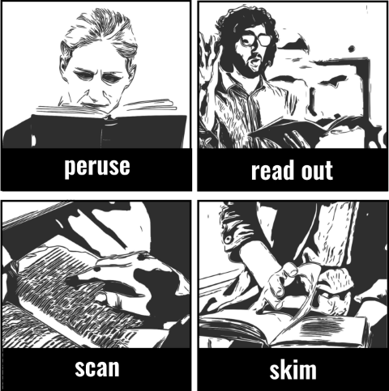
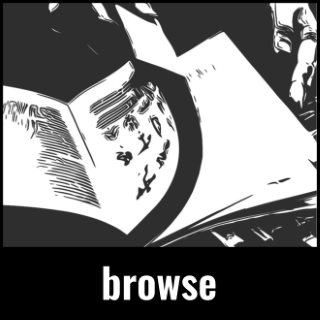

QUICKLY glance: to have a quick look. glimpse: to have a quick, incomplete view of sth. scan: quickly without reading carefully. Usually looking for a particular thing. skim: quickly to get the main idea.
IN DETAIL peruse: formal. Read sth carefully. read through/over: completely, from beginning to end.
ALOUD read off: to read completely to yourself or in a loud voice. read out: a list, results, a letter to sb esp. because they need the information.
STUDYING read for (sth): to study in order to get a degree. read up (sth): Informal. To study a subject completely, thoroughly. Find out by reading. take in: to understand.

INFERRING read into: to believe sth is meant though not expressed. read between the lines: to read what is implied but not stated.
TRYING TO FIND browse (though): to turn pages stopping to read only the parts that interest you in order to choose or so sth from it. dip into (a book): to read short parts of a book, because you are looking for a particular piece of information.